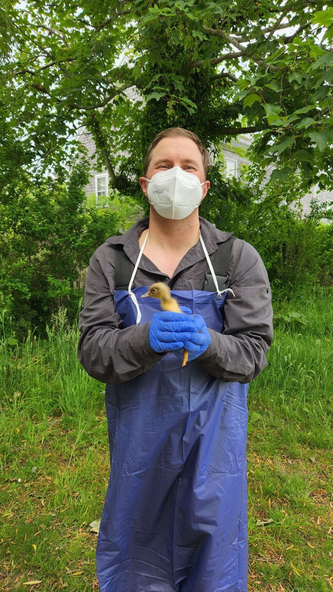
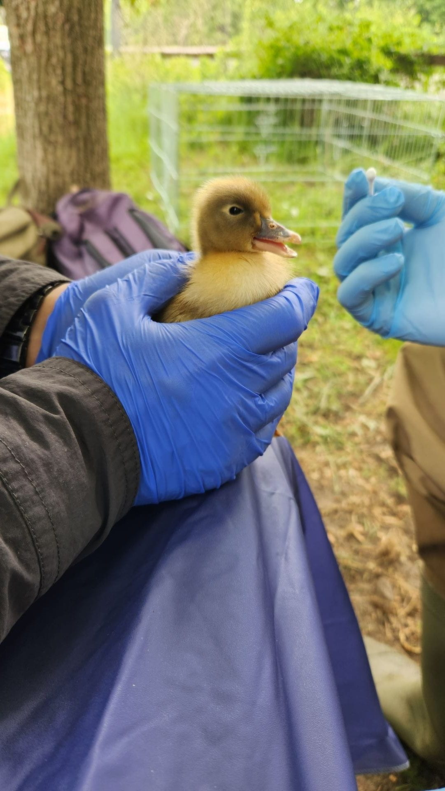
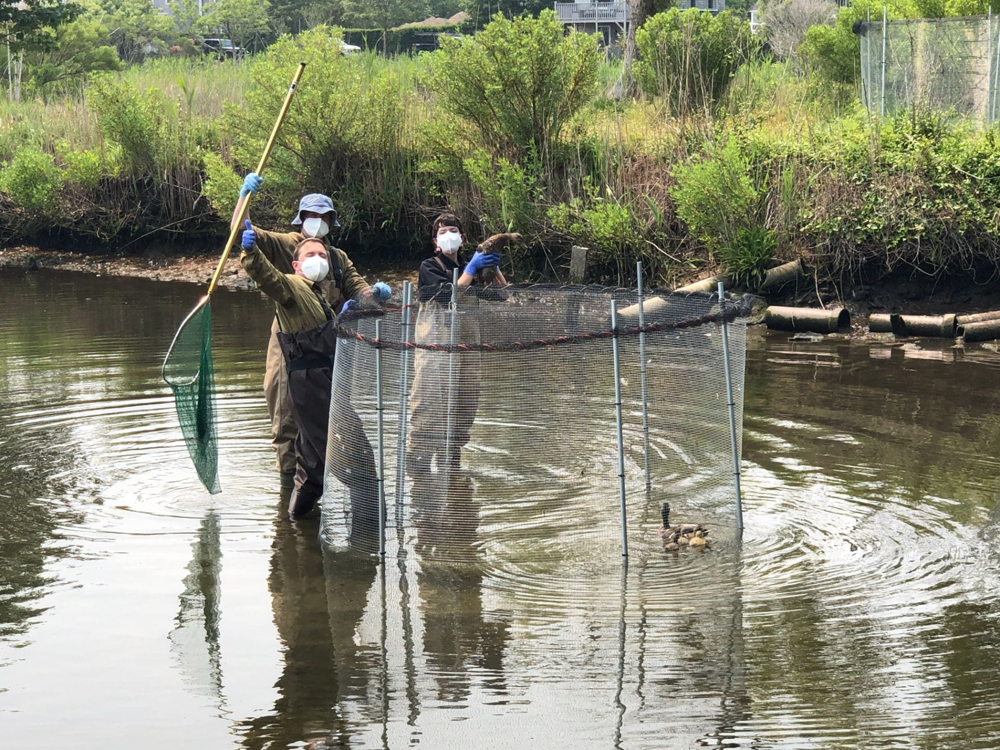
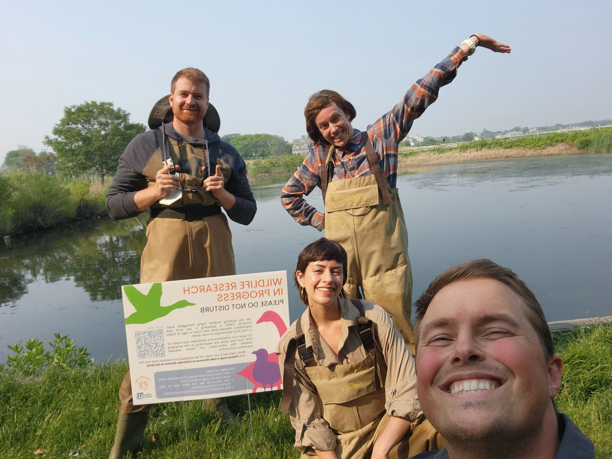
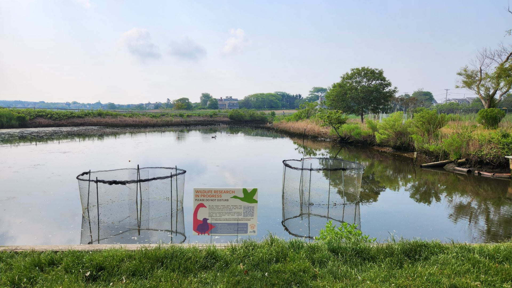

Them Are Ducks….


This comedic line from the movie ‘Monty Python and the Holy Grail’ flashed in my head, as I pulled this beautiful male mallard from the clover leaf trap so it could be sampled and released again. We were back on Nantucket this past week to monitor the local waterfowl population for avian influenza, specifically highly pathogenic avian influenza. We had been watching a group of about 100 ducks swim in this small pond, Consue Springs, in the middle of this quaint Island town. Having set up the traps that morning it was a waiting game as the tide receded, exposing more of the corn ‘kibble’ in the center of these one way heart-shaped traps along the edge of the water. All the ducks had to do was swim into the trap for a tasty meal, and then of course donate a few swabs and some blood to science but the meal is the more attractive factor here.
It was already midday when the first MALL (the American Birding Association four-letter code for Mallards) finally wiggled his way into the gold mine of corn. Now our lab has this saying that ‘birds begat birds’ so we were going to let this individual encourage the others to swim into the trap with him. Pretty soon we had three more ducks swimming alongside him, so it was time to spring the trap. After some deft dip-netting and some iconic duck hand passes we had all four MALL’s inside our holding cage to begin processing.
So you might be wondering what ‘duck processing’ might consist of, well you came to the right blog to find out. Let’s zoom out a little bit first. Remember we are looking for avian influenza (AI) infections in these birds, virus hunting If you prefer. AI infections are typically contained in the respiratory and GI tracts which means in order to see if these birds are actively shedding any live virus, we need samples from both ends of the bird. The business end i.e. the mouth and the ‘dirty’ end i.e. the cloaca. Bonus points if our new friends decide to use its handler as a restroom, we love a good fecal sample here. So yeah, we are taking oral and cloacal swabs to test for infection. But wait! There is more! We all just went through a global pandemic so probably the first thing you might think of when I say virus is SARS-COV-2, and the vaccine. Well, I also think of antibodies, which can be super helpful in telling us if this bird has had an infection to AI in the past since antibodies are specific to the infection they fight. Where do you get antibodies….that’s right blood samples and more specifically the serum fraction of blood. We also want a blood sample to look at gene expression but that will be its own post, for now, we are just taking a small blood sample to test for antibodies and expressed genes. Finally, we just take some simple morphometrics such as wing length, some beak measurements, and weight.
All in all, this takes about 10 to 15 minutes and then our feathered friend is back on the water to go eat some more tasty corn. The stunning male (or drake) MALL I pulled out of our trap did great and was back to swimming shortly. In total, we sampled ten adult ducks and two ducklings, which by the way are the cutest thing I have ever seen.
It is hard to explain the feeling of holding these magnificent animals knowing the weight of what you are doing. They are just so intricate and fascinating in their own right, their feathers for example are simply astonishing. This virus is truly a threat to the beauty of this world, it’s a privilege to be part of the solution. Until next time keep your eyes to the sky.
Cheers, Jonathan Dain


